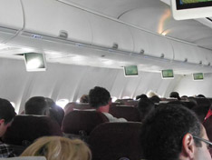

Research: Directed Storytelling
We used directed storytelling to interview users about their previous bartering and trading experiences. We tried to capture the process of individuals' mental models and their informational and emotional needs for bartering.
Interviews
Interview 1: We interviewed a Mechanical Engineering student attending Case Western University while on a flight back to Pittsburgh. We asked the participant if he had any experience bartering. The student had bartered old computers for older PlayStation games and a PlayStation console.
When asked what initiated the barter, he said that he didn’t need his old computers but that he was interested in new games. He had a friend that needed a computer and that had Playstation games so he initiated the transaction. This participant also stated the quote, “One man’s trash is another man’s treasure.”
The participant had only bartered with his friends and was not aware of Craigslist’s bartering option. He’s used Craigslist before but only for cash – i.e., selling apartment furniture for cash.
Mechanical Turk
Description: We posted three Mechanical Turk hits, or tasks for Turkers to answer the following: Describe a time in which you bartered something with another person.
- Who initiated the transaction?
- How did you initiate the transaction (did you post an ad, did you talk?Who did you trade with? Why did you do so?)
- Do you still own the object you received?
- How did you go about completing your barter transaction?
- Did you use any online tools?
- Who did you barter with?
- How did you find that person?
- Do you still own the item you received?
- What did you trade?
- How did you feel after trading your object?
- How did you feel after receiving the object you wanted?